Természetes megoldás
A masszázs segíti a test öngyógyító folyamatait.
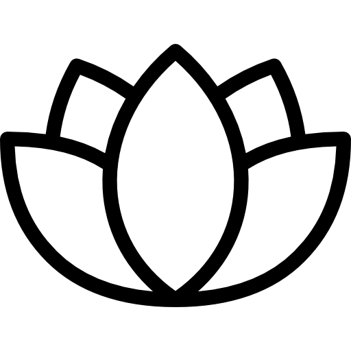
Stresszoldás
Csökkenti a feszültséget és javítja a közérzetet.
Egyensúly
Helyreállítja a testi és lelki harmóniát.
Rólad szól
Minden kezelés személyre szabott.
Masszázs kezeléseimmel segítek megszabadulni a feszültségtől és visszanyerni az egyensúlyt.
Időpontfoglalás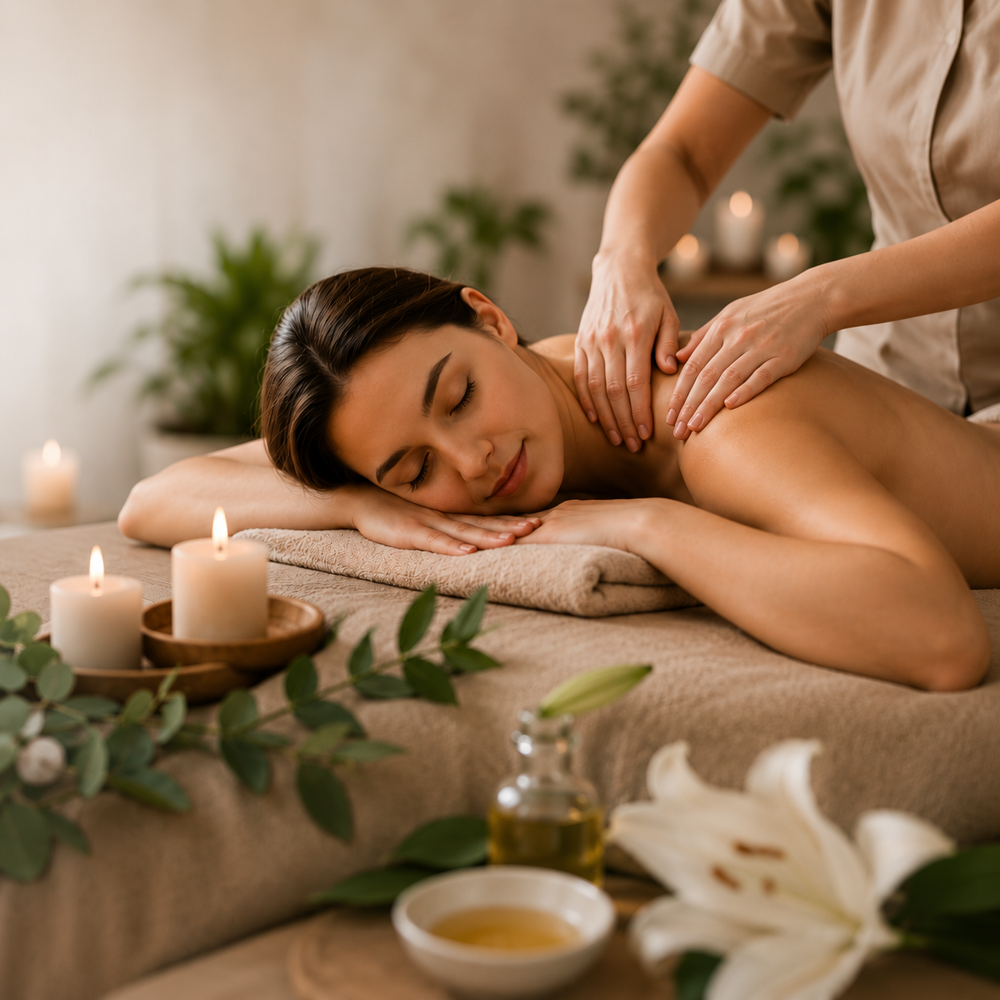
A masszázs segíti a test öngyógyító folyamatait.

Csökkenti a feszültséget és javítja a közérzetet.
Helyreállítja a testi és lelki harmóniát.
Minden kezelés személyre szabott.
Szia, Edina vagyok. Küldetésem, hogy segítsek megtalálni a testi és lelki egyensúlyt.
Több éve foglalkozom különféle masszázstechnikákkal. Hiszem, hogy a masszázs nem csupán a test ellazításáról szól, hanem egy olyan természetes öngyógyító folyamat elindításáról.
"Edina kezei csodákra képesek! A thai olajos masszázs után úgy éreztem magam, mintha újjászülettem volna. Biztosan rendszeres vendég leszek!"
- Katalin
"Nagyon tiszta, kellemes és megnyugtató környezet. Profi hozzáállás, a hátfájásom már az első alkalom után rengeteget javult. Csak ajánlani tudom mindenkinek."
- Gábor
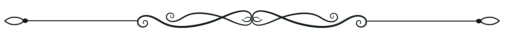
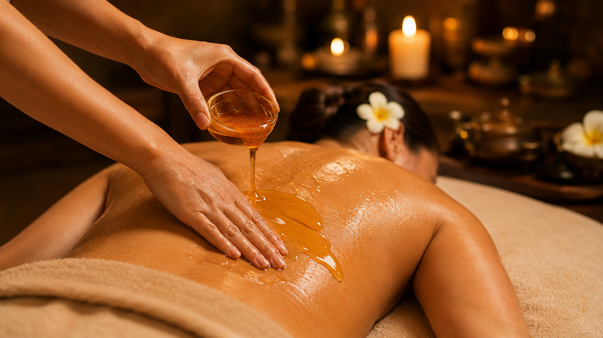
Intenzív tisztító és salaktalanító kezelés a méz erejével.
A tibeti méregtelenítő mézmasszázs egy különleges energetizáló és bőrfeszesítő kezelés, amely a méz erejével támogatja a szervezet tisztulását és javítja a közérzetet.
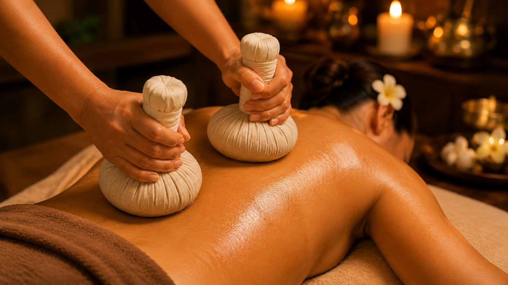
Melegített gyógynövényes kezelés a görcsös izmok lazítására.
A thai herballabdacs masszázs egy mélyen melegítő és feszültségoldó kezelés, amely a gőzölt gyógynövények erejével segít enyhíteni az izomfájdalmakat és javítani a szervezet energiaáramlását.
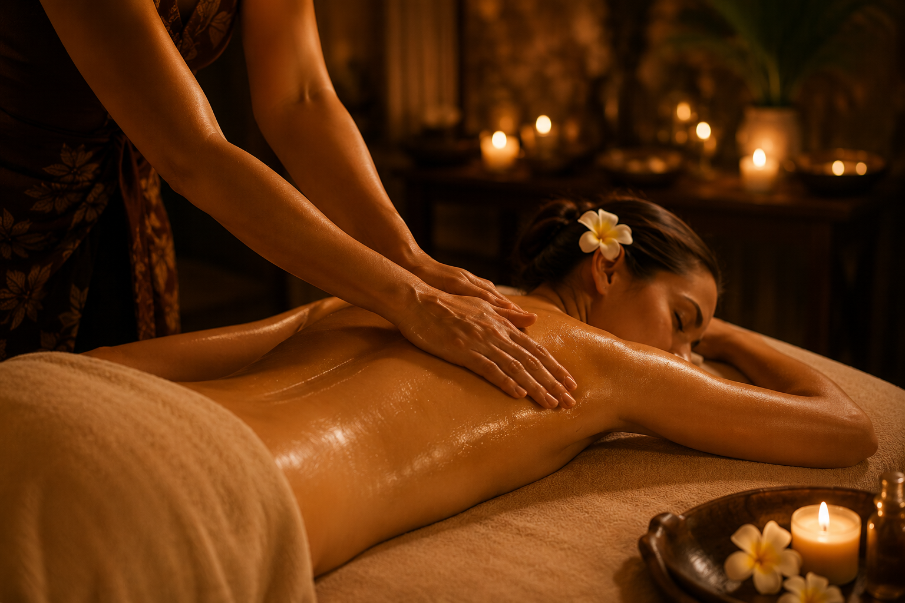
Áramló, ritmikus mozdulatok a teljes testi-lelki harmóniáért.
A hawaii lomi-lomi masszázs egy áramló és mélyen pihentető kezelés, amely segít helyreállítani a testi-lelki harmóniát és feloldani a felhalmozódott feszültséget.
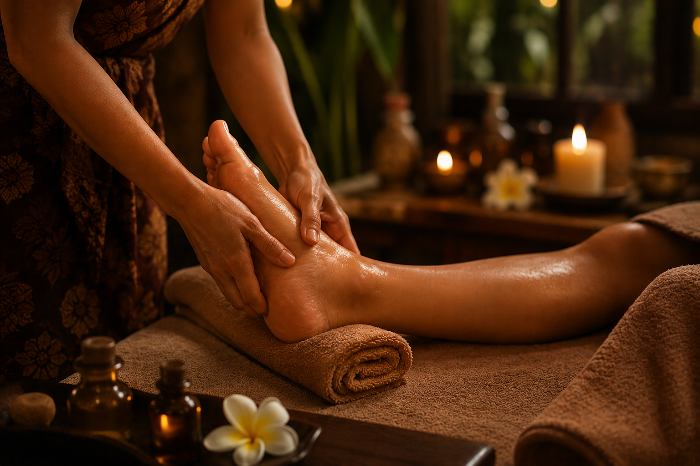
Élénkítő és feszültségoldó kezelés a fáradt lábaknak.
A frissítő talpmasszázs egy élénkítő és feszültségoldó kezelés, amely segít enyhíteni a lábak fáradtságát és javítani az általános közérzetet.
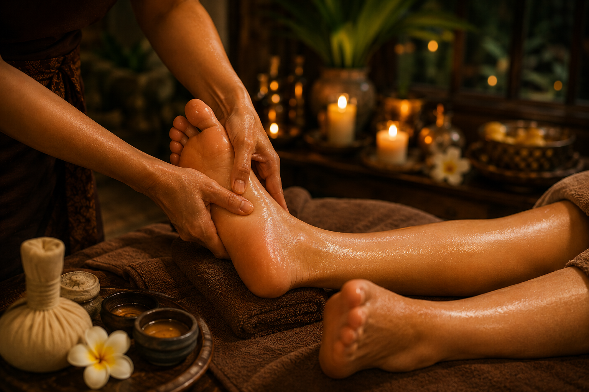
Célzott reflexzóna-kezelés az öngyógyító folyamatokért.
A talpdiagnosztika és méregtelenítő talpmasszázs egy célzott, egészségmegőrző kezelés, amely segít feltérképezni a szervezet állapotát, enyhíteni a feszültséget és serkenteni a természetes méregtelenítést.
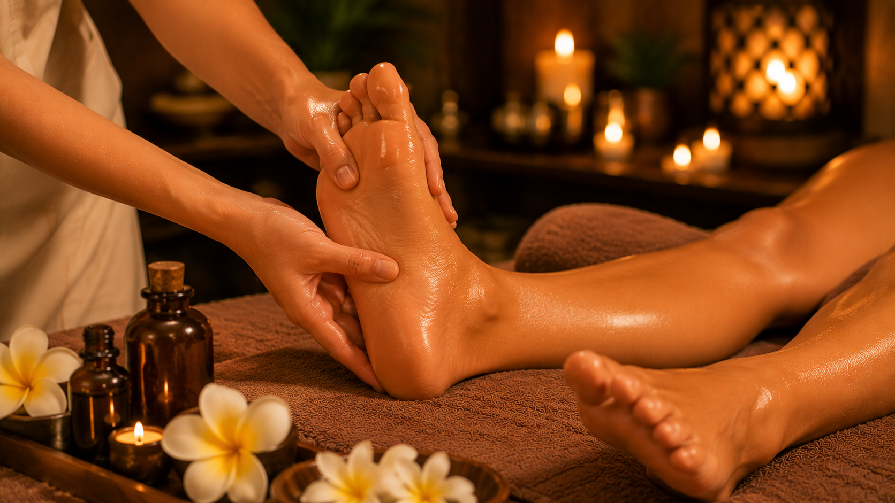
Tradicionális thai technika prémium olajok ápolásával ötvözve.
A Bodhi thai olajos talpmasszázs egy mélyen pihentető és energetizáló kezelés, amely a tradicionális thai technikák és a tápláló olajok erejével segít enyhíteni a feszültséget és javítani az általános közérzetet.
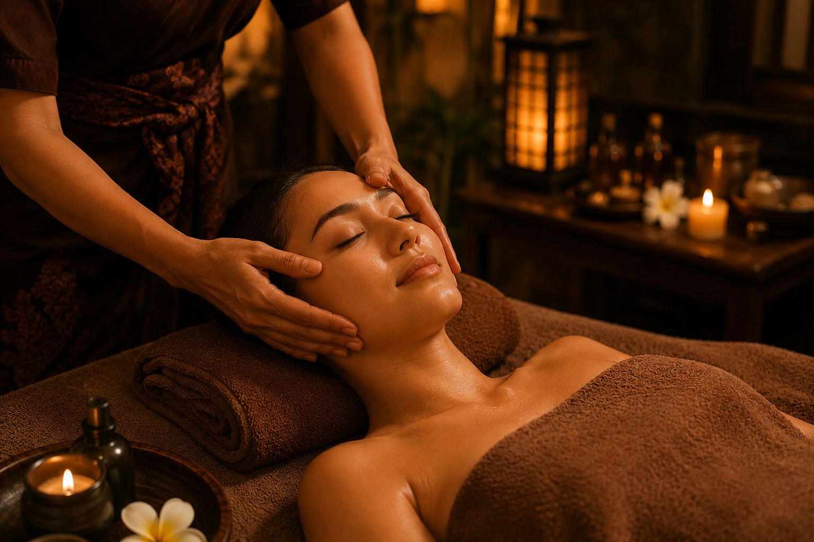
Természetes lifting és fiatalító rituálé az arcbőrnek.
Exkluzív arcfiatalító és stresszoldó kezelés, amely a finom, ritmikus mozdulatok erejével serkenti a kollagéntermelést és biztosítja a teljes szellemi lecsendesedést.
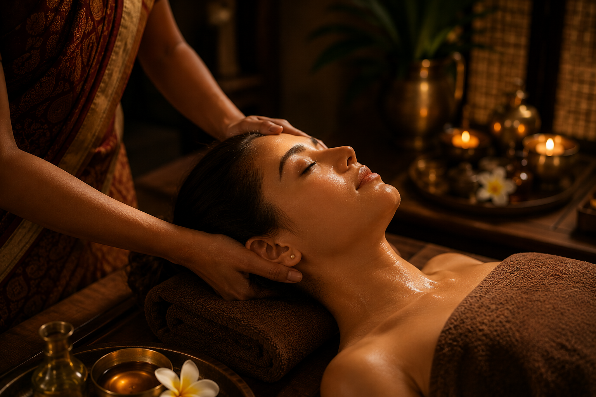
Mélyen megnyugtató, stresszoldó rituálé az elme lecsendesítésére.
A indiai ayurvédikus fej- és arcmasszázs egy mélyen megnyugtató és stresszoldó kezelés, amely segít elcsendesíteni az elmét és enyhíteni a mentális feszültséget.
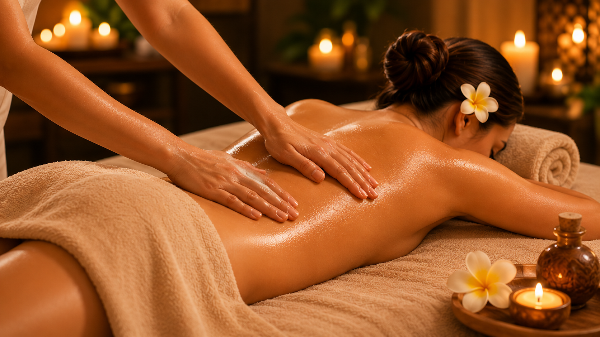
Klasszikus svédmasszázs technika az izmok teljes átdolgozására.
A frissítő svédmasszázs egy klasszikus izomlazító és élénkítő hatású kezelés, amely segít enyhíteni a mindennapi feszültséget és javítani a szervezet általános közérzetét.
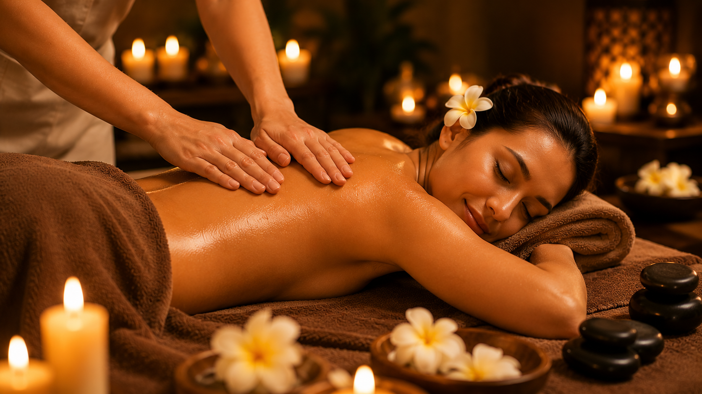
Lágy, megnyugtató simítások a mindennapi stressz ellen.
A relaxáló svédmasszázs lassú, áramló mozdulataival kiválóan alkalmas a mindennapi rohanásból adódó feszültség feloldására és a belső béke megteremtésére.
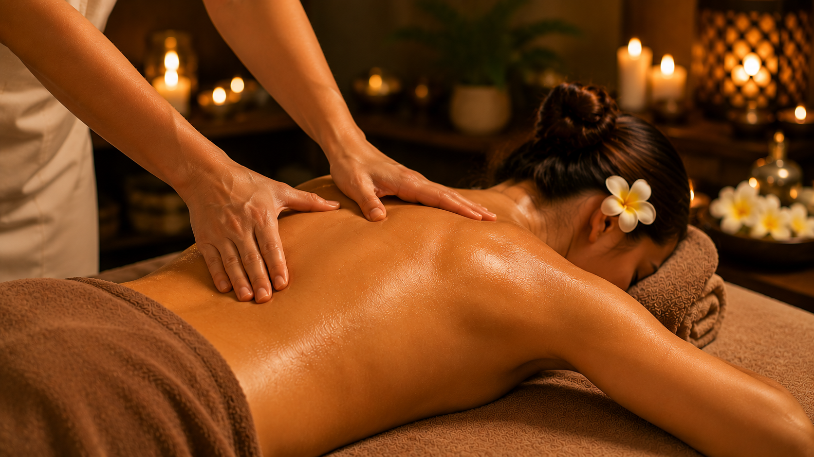
Fókuszált kezelés a hát, a nyak és a vállak merevségére.
A hátmasszázs hatékonyan oldja a mindennapi stressz és az ülőmunka okozta merevséget, célzott fogásokkal frissíti fel a gerinc környéki izmokat és csökkenti a fájdalmat.